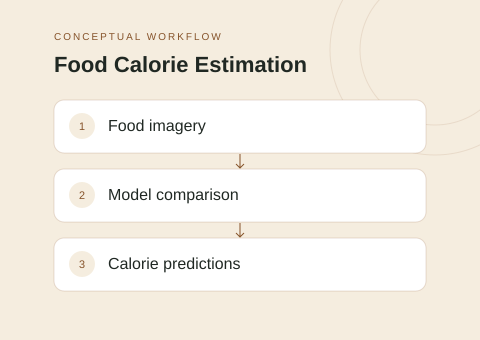

The idea
This academic project investigates calorie prediction using Nutrition5K data. It provides a notebook-based experimental workflow with CNN, autoencoder, and ResNet approaches, along with validation-loss histories and prediction artifacts.
Project scope
- Prepare a Nutrition5K-based model experimentation workflow.
- Explore CNN, autoencoder, and ResNet approaches.
- Record validation mean-squared-error histories across training epochs.
- Save selected model artifacts and export predictions.
Technical approach
The project uses Python notebooks to connect data preparation, model training, and evaluation. Comparing validation-loss histories offers a way to inspect training behavior across different architectures without treating model complexity as a result in itself.
Scope & limitations
No numerical performance claims are reproduced here because the evaluation setup and results have not been independently rerun. This is a two-author academic project; individual responsibilities are not specified. Image-based estimates should not be presented as precise nutritional measurements.